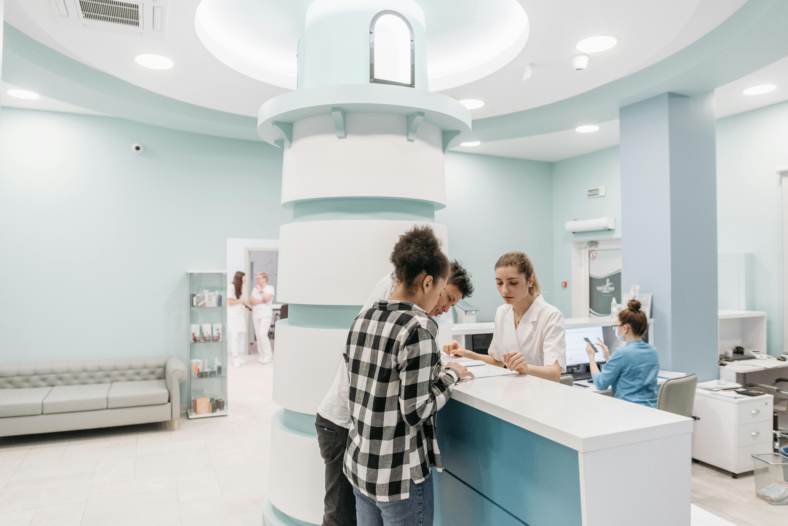
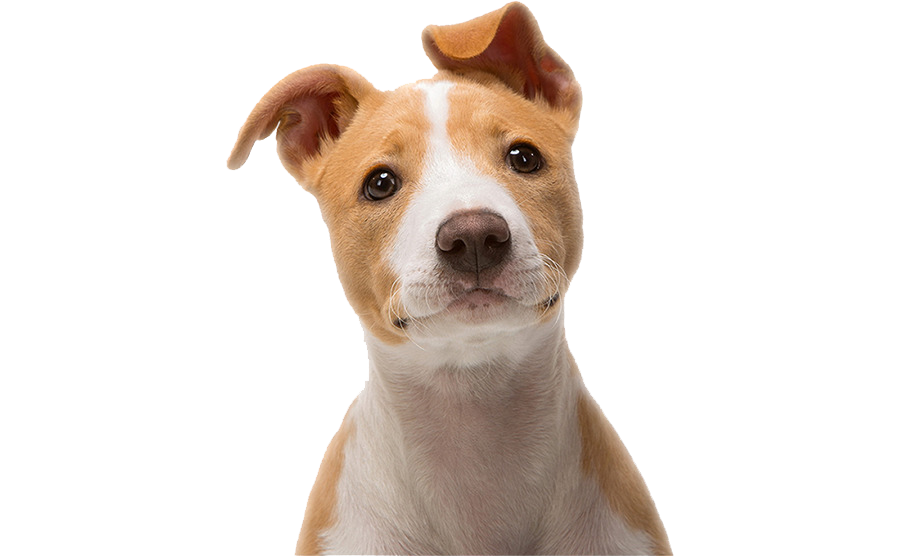

Dedicamo-nos ao seu pet, visando sempre a sua saúde e bem-estar.
Contamos com um equipe de profissionais altamente qualificados e especializados, dedicados diariamente a proporcionar o melhor cuidado ao seu companheiro de quatro patas.

Desde 2012
Cuidamos do seu pet com o respeito que ele merece.
Nossa clínica possui uma infraestrutura totalmente voltada para oferecer um atendimento condizente com a importância que cães, gatos e outras espécies de estimação representam na vida das pessoas.
Contamos com serviços veterinários disponíveis 24h por dia, garantindo o melhor cuidado para o seu companheiro de quatro patas.
Vocação Transformada em Profissão:
O Centro Veterinário PetVille ao Lado do Seu Animal
O centro veterinário PetVille surgiu para estar sempre ao lado do seu animal.
Uma vocação de amor e dedicação que se transformou em profissão.

Nossos serviços
Em nossa clínica veterinária, oferecemos uma gama abrangente de serviços dedicados ao bem-estar e saúde dos seus animais de estimação.
Desde consultas de rotina, vacinações até procedimentos cirúrgicos especializados, nossa equipe altamente qualificada e dedicada está comprometida em proporcionar o melhor atendimento.
Contamos também com serviços de emergência 24 horas, garantindo tranquilidade e cuidado ininterrupto para o seu companheiro de quatro patas. Seja qual for a necessidade do seu pet, estamos aqui para oferecer cuidado, amor e expertise veterinária excepcionais.